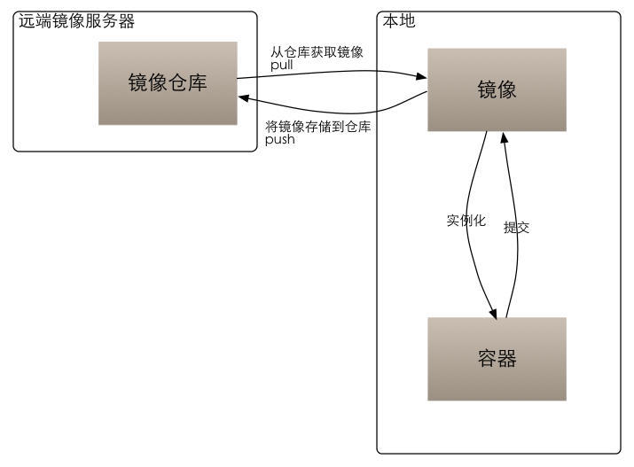

Docker 是什么?
Docker 是一个开源的轻量级容器管理引擎，人们可以利用它打包自己的应用以及依赖包到一个可移植的容器中，然后发布到任何流行的Linux机器上。
Docker 有什么特点？
- 资源占用少
- 启动快
- 几乎没有性能损耗
- 镜像脚本化构建
- 快速交付应用程序，隐藏内部细节
Docker 能干什么？
- 加速本地开发和构建流程，使其更加高效，更加轻量化
- 让独立服务或应用程序在不同环境中运行得到相同的结果
- 创建隔离的环境进行测试
- 高性能，超大规模宿主机部署
Docker 都包含些什么？
- Docker客户端和服务器端
客户端可以向服务器进程发起请求，如：创建，停止，销毁容器等操作，服务端处理所有docker的请求，管理所有容器。 - Docker镜像
从概念上讲类似于vm里面的iso文件，就是一个只读的模板。一个镜像可以包含一个Linux操作系统，里面安装了一系列的软件。 - Registry
镜像存放的中央仓库 Docker容器
容器与镜像的关系有点像进程与程序的关系，运行中的镜像就叫容器。 从原理上讲，容器事实上是镜像上面加了一层读写层，以及一个被隔离的进程空间。